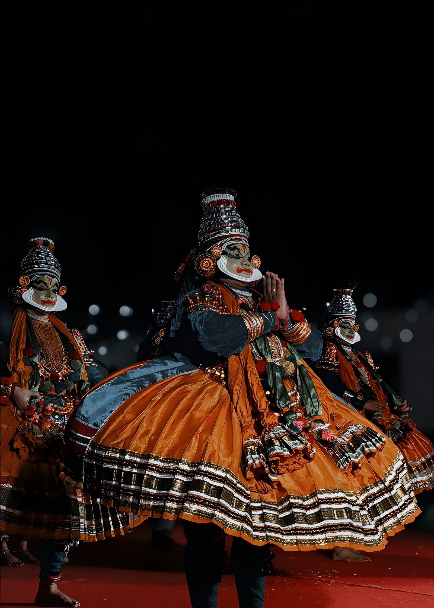
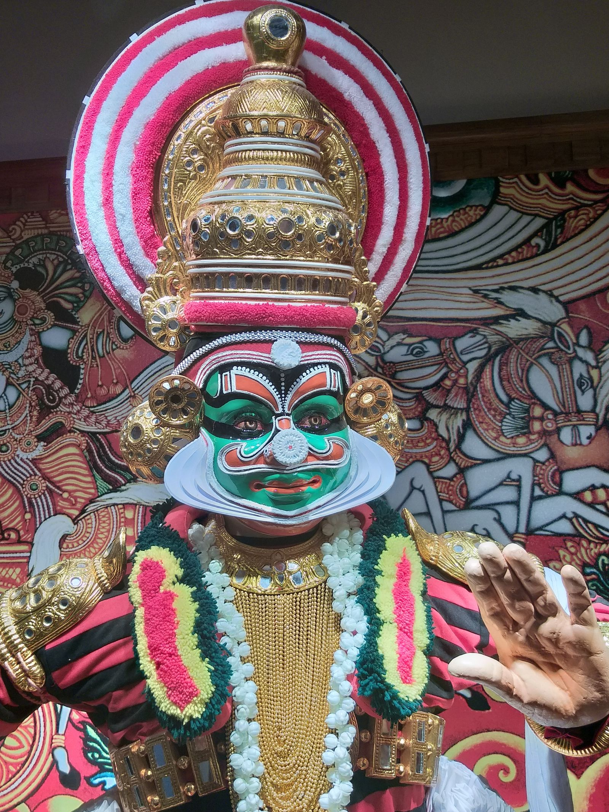
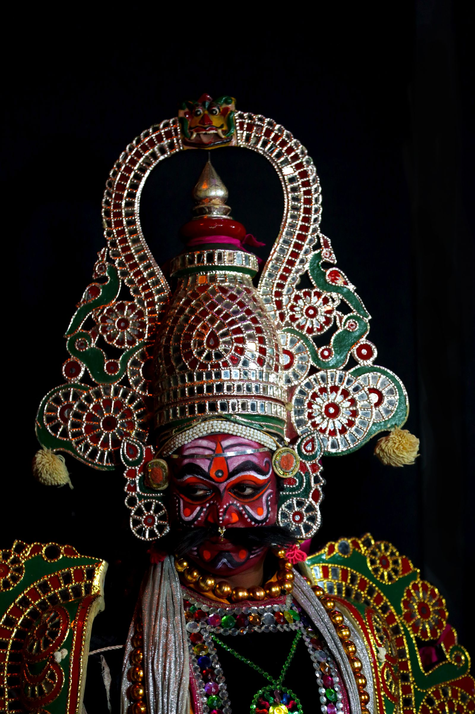
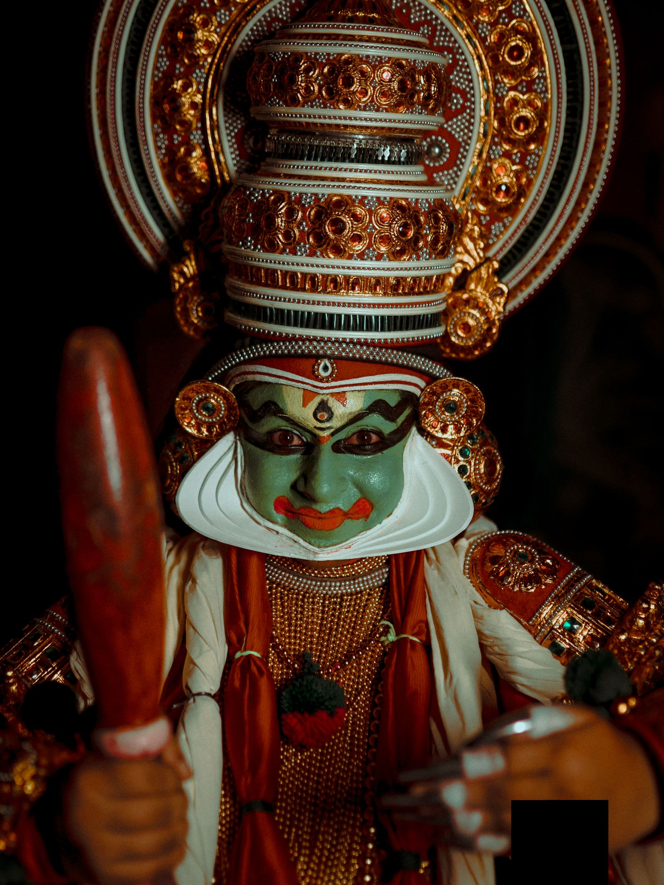
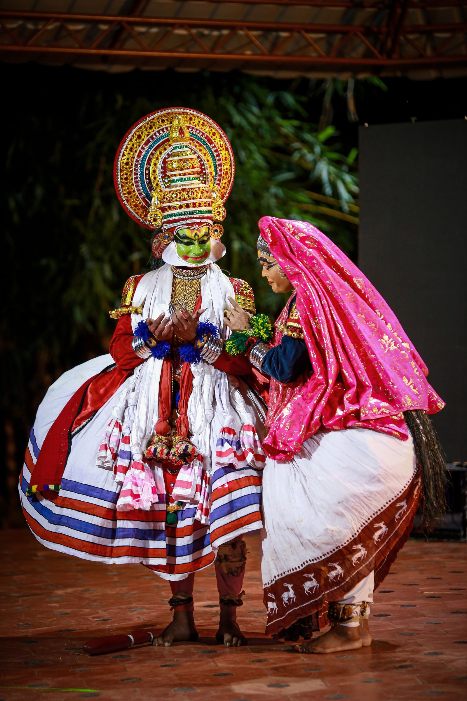
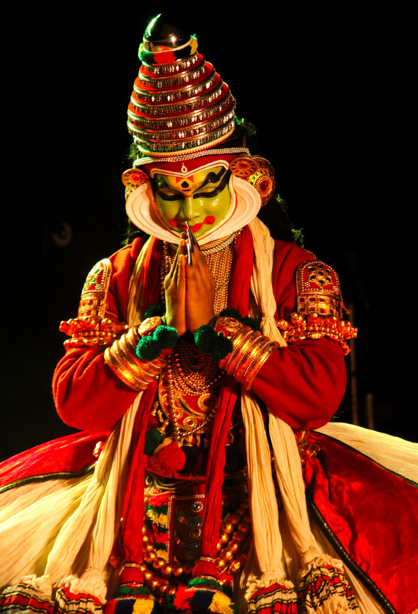

The season runs November to May. Make-up begins in daylight; the story ends at dawn.
Ottapalam, Kerala · The season opens at Guruvayur Ekadasi
The face takes four hours. The story takes all night.
I am Keshav Madhavan, a Kathakali performer. From November to May I travel
Kerala's temple-festival circuit with my troupe — two singers, chenda and maddalam drums,
a make-up master and his assistant — and we perform the old stories the way they were
written to be performed: whole, in a courtyard, from the lighting of the lamp to first light.
Season · November 2026 – May 2027
Home ground · Ottapalam, Palakkad district
Booked by · temple committees, festivals, families

The company at nightFull vesha, courtyard stagePhotograph: Pexels — the art form, not the man (credits in CREDITS.md)
31Festival nights, last season
14Years at the kalari before my first full night
4 hrsIn the make-up chair, every night
9Stories in repertoire
0Forty-minute “highlights” shows, ever
The vesha · What the colours mean
A Kathakali face is read before it is seen to move.
The audience knows who has entered by the colour of the face and the shape
of the beard. These are the four faces I am booked for, and the hours each one costs before
the lamp is lit.

Pacha veshaThe green face
Kings, gods and heroes — Nala, Bhima, Arjuna. The green is mixed fresh each evening,
laid over a white border, and the eyes are lined out to the temples so a look carries
to the back of a courtyard.
Make-up: 3½ hours · My principal face

Kathi veshaThe knife
The proud and the cruel — Duryodhana, Keechaka, Ravana. A blade of white rides the
nose, the face turns red and black, and the character arrives already arguing with the world.
Make-up: 4 hours · The crowd's favourite villainy

Thadi veshaThe beard
Bearded characters wear the chutti — a frame of rice paste and paper built layer by
layer around the jaw. White beard: Hanuman, the devoted. Red: the fierce. Black: the
hunter and the forest. Mine is the red.
Make-up: 4½ hours · The chutti is built, never glued

MinukkuThe polished face
Women, sages and messengers — a warm, polished face without the great crown, played
in our troupe by my colleague of twenty years. Subtle is harder than fierce: nothing
to hide behind.
Make-up: 2½ hours · Played by Devaki, our minukku artist
Repertoire · Stories I can be booked for whole
Every story below is performed entire, or not by me.
Committees sometimes ask for the fights without the grief. I will not do it.
A story cut to its battles is a menu read aloud instead of a meal — the audience goes home
having seen costumes, not Kathakali. These are the nights I offer.
Nalacharitam — Night Two
Mahabharata · play by Unnayi WarrierNala · pacha veshaFull night
Kalyanasaugandhikam
Mahabharata · Bhima seeks the celestial flowerBhima · pacha veshaFull night
Keechakavadham
Mahabharata · the Virata episodeKeechaka · kathi veshaFull night
Duryodhanavadham
Mahabharata · the fall of DuryodhanaDuryodhana · kathi veshaFull night
Thoranayuddham
Ramayana · Hanuman at Lanka's gateHanuman · vella thadiFull night
For committees · The performance planner
Price the night before you write to me.
Everything the planner uses is printed on this page, in the rate table
beside it. No figure appears from nowhere, and the fee it shows is the fee I will quote
in my letter.
Starts — full night 9:00 PM · excerpt 7:30 PM · demonstration 10:00 AM
lamp lit
Nights already given, 2026–27
10–12 December 2026 — Guruvayur Ekadasi.
24 December 2026 – 2 January 2027 — a temple series in Thrissur district.
13–15 February 2027 — a wedding week in Kochi.
Every other night of the season is open until a committee's letter holds it.
One night, told whole
Guruvayur Ekadasi — Nalacharitam, Night Two

Temple courtyard · December 2025 · Full night, 9 PM – 5 AM
The ask. The utsavam committee wanted Night Two of Nalacharitam — Nala's ruin
at the dice board and his leaving of Damayanti — played entire on the Ekadasi night,
when the courtyard holds families who have kept this story by heart for generations.
The work. Make-up began at 4 in the afternoon. We played the preliminaries as
the courtyard filled, and the story from nine until five, the singers spelling every
line twice so the back rows could follow the hands. My Nala loses everything he owns
in the second hour and his wife in the fourth; the rest is playing a man walking away
from his own life, in a skirt that weighs more than a child.
The outcome. The committee has booked the same night for 2026, and asked for
Night Three to follow it in 2027. The full account is on the Performances page.
“Committees have offered him double to cut the story and he has refused us too —
politely, in writing, with the reasons. That is why the courtyard trusts him with
Ekadasi. When Madhavan plays Nala, nobody leaves at the dice game. Nobody.”
Hold a night of the season.
Write with your date, your courtyard and the story you have in mind. I answer every
letter myself, within three days — sooner in season. Or price the night first, in the
planner above.